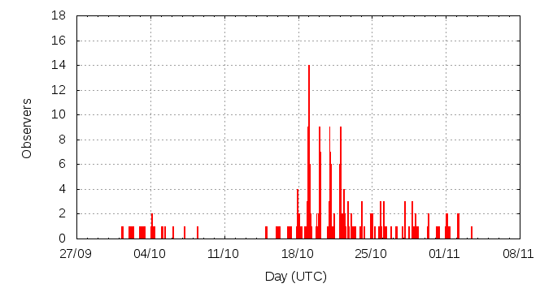

[ www.imo.net ]
This page shows automated results of the Orionids 2014, based on visual observations reported by citizen scientists through the report form of the International Meteor Organization (IMO). The information on this page is generated automatically; for scientific use please refer to manual analyses published in scientific journals (such as WGN). Send your feedback regarding this page to Geert Barentsen.
Page contents:
Note that the data will finally go into the Visual Meteor Database (VMDB) with manual inspection and rectifications. We are curretly completing the files of 2008-2011. The VMDB is an enormous project - any help will be greatly appreciated.
Page generated: 2014 December 14 at 19:30 UTC.
The graph below shows the ZHR (Zenithal Hourly Rate), which is the number of meteors an observer would see under a very dark sky with the radiant of the shower in zenith.
ZHRmax = 21 based on 1031 Orionids reported in 317 intervals, assuming population index r = 2.5

| Time (UTC) | Solarlon | nINT | nORI | ZHR | Particle density | |
|---|---|---|---|---|---|---|
| 2014-10-01 16:25 | 188.216 | 4 | 4 | 3 | ±1 | 6 / 109·km3 |
| 2014-10-02 19:19 | 189.318 | 8 | 8 | 4 | ±1 | 8 / 109·km3 |
| 2014-10-03 22:21 | 190.427 | 11 | 11 | 3 | ±1 | 6 / 109·km3 |
| 2014-10-04 19:25 | 191.291 | 7 | 10 | 5 | ±2 | 11 / 109·km3 |
| 2014-10-05 16:53 | 192.172 | 5 | 7 | 3 | ±1 | 6 / 109·km3 |
| 2014-10-07 05:30 | 193.676 | 3 | 2 | 3 | ±2 | 6 / 109·km3 |
| 2014-10-08 10:51 | 194.882 | 2 | 4 | 8 | ±4 | 17 / 109·km3 |
| 2014-10-16 00:25 | 202.364 | 1 | 4 | 14 | ±6 | 30 / 109·km3 |
| 2014-10-16 18:22 | 203.105 | 3 | 17 | 16 | ±4 | 34 / 109·km3 |
| 2014-10-17 19:08 | 204.129 | 8 | 22 | 11 | ±2 | 23 / 109·km3 |
| 2014-10-18 02:36 | 204.438 | 5 | 22 | 10 | ±2 | 21 / 109·km3 |
| 2014-10-18 16:22 | 205.007 | 8 | 22 | 9 | ±2 | 19 / 109·km3 |
| 2014-10-19 00:16 | 205.335 | 38 | 117 | 10 | ±1 | 21 / 109·km3 |
| 2014-10-19 03:16 | 205.459 | 10 | 47 | 13 | ±2 | 27 / 109·km3 |
| 2014-10-19 18:35 | 206.092 | 6 | 20 | 10 | ±2 | 21 / 109·km3 |
| 2014-10-20 01:07 | 206.363 | 35 | 125 | 10 | ±1 | 21 / 109·km3 |
| 2014-10-20 13:14 | 206.865 | 6 | 24 | 14 | ±3 | 30 / 109·km3 |
| 2014-10-21 00:41 | 207.339 | 38 | 94 | 11 | ±1 | 23 / 109·km3 |
| 2014-10-21 04:51 | 207.512 | 4 | 20 | 18 | ±4 | 38 / 109·km3 |
| 2014-10-21 20:16 | 208.151 | 4 | 21 | 21 | ±4 | 44 / 109·km3 |
| 2014-10-22 01:15 | 208.358 | 22 | 100 | 16 | ±2 | 34 / 109·km3 |
| 2014-10-22 06:46 | 208.587 | 7 | 26 | 10 | ±2 | 21 / 109·km3 |
| 2014-10-22 09:38 | 208.706 | 4 | 33 | 13 | ±2 | 27 / 109·km3 |
| 2014-10-22 22:24 | 209.234 | 11 | 25 | 8 | ±2 | 17 / 109·km3 |
| 2014-10-23 08:29 | 209.653 | 2 | 21 | 10 | ±2 | 21 / 109·km3 |
| 2014-10-23 23:21 | 210.270 | 5 | 26 | 17 | ±3 | 36 / 109·km3 |
| 2014-10-24 17:07 | 211.007 | 6 | 20 | 9 | ±2 | 19 / 109·km3 |
| 2014-10-25 09:22 | 211.683 | 7 | 28 | 11 | ±2 | 23 / 109·km3 |
| 2014-10-25 22:22 | 212.223 | 5 | 23 | 11 | ±2 | 23 / 109·km3 |
| 2014-10-26 08:01 | 212.624 | 6 | 17 | 7 | ±2 | 15 / 109·km3 |
| 2014-10-27 17:26 | 214.013 | 7 | 25 | 7 | ±1 | 15 / 109·km3 |
| 2014-10-28 22:12 | 215.209 | 6 | 26 | 5 | ±1 | 11 / 109·km3 |
| 2014-10-29 13:43 | 215.855 | 4 | 10 | 5 | ±2 | 11 / 109·km3 |
| 2014-10-30 21:23 | 217.174 | 5 | 13 | 5 | ±1 | 11 / 109·km3 |
| 2014-11-01 02:50 | 218.401 | 9 | 17 | 4 | ±1 | 8 / 109·km3 |
| 2014-11-02 03:46 | 219.439 | 4 | 16 | 6 | ±1 | 13 / 109·km3 |
| 2014-11-03 10:58 | 220.740 | 1 | 4 | 6 | ±3 | 13 / 109·km3 |
The reported intervals are automatically added together into the bins shown above, based on the number of meteors and the distribution of the intervals. For each bin, the following parameters are computed:
Data has been received from 48 observers in 24 countries. Thank you for your efforts!
Note: click on the map for an interactive version.

| Observer | Country | Teff | nORI |
|---|---|---|---|
| Ivan Babaca | Slovakia | 0.58h | 1 |
| Steven Brown | United Kingdom | 2.00h | 9 |
| Carlos Burgos | Spain | 3.37h | 6 |
| Seokhee Cho | South Korea | 1.00h | 1 |
| Klemen Cotar | Slovenia | 5.04h | 16 |
| William Godley | United States | 1.5h | 6 |
| Alberto Gonzalez | Spain | 3.37h | 13 |
| Ilija Ivanovi? | Serbia | 9h | 54 |
| Dusanka Kovacevic | Serbia | 2.31h | 6 |
| Pete Kozich | United States | 0.90h | 7 |
| Marjan Mahdian | Iran | 2.47h | 21 |
| Tomeu Mas | Spain | 3.37h | 6 |
| Bruce Mccurdy | Canada | 2.00h | 6 |
| Marco Micheli | Italy | 0.20h | 2 |
| Sirko Molau | Germany | 1.53h | 8 |
| Yogesh Pandey | India | 2.00h | 7 |
| Prathamesh Pawar | India | 2.00h | 8 |
| Veronika Rehakova | Slovakia | 0.58h | 1 |
| Ina Rendtel | Germany | 7.89h | 29 |
| Joan Serra | Spain | 3.37h | 7 |
| Miguel Angel Serra Martin | Spain | 3.37h | 12 |
| Stanislav Simkovic | Slovakia | 0.58h | 1 |
| Ivan Stankovic | Serbia | 2.65h | 23 |
| Fengwu Sun | China | 2.20h | 17 |
| Matej Sustr | Slovakia | 0.58h | 2 |
| Terrence Ross | United States | 42.96h | 121 |
| Jurgen Rendtel | Germany | 26.94h | 114 |
| Pierre Bader | Germany | 8.4h | 22 |
| Koen Miskotte | Netherlands | 2.75h | 6 |
| Salvador Aguirre | Mexico | 0.50h | 2 |
| Karoly Jonas | Hungary | 16.33h | 39 |
| Javor Kac | Slovenia | 15.15h | 70 |
| Christoph Gerber | Germany | 6.59h | 7 |
| Shigeo Uchiyama | Japan | 4.03h | 11 |
| Michel Vandeputte | Belgium | 28.07h | 135 |
| Tomasz Lenart | Poland | 2h | 10 |
| Vilem Heblik | Czech Republic | 12.85h | 54 |
| Branislav Savic | Serbia | 6.66h | 39 |
| Weizhou Zeng | China | 1.17h | 1 |
| Mitja Govedic | Slovenia | 1.60h | 10 |
| Pierre Martin | Canada | 8.9h | 75 |
| Alexandr Maidik | Ukraine | 2h | 3 |
| Mikhail Maslov | Russia | 0.77h | 4 |
| Salvador Aguirre | Mexico | 1.50h | 9 |
| Yasuhiro Tonomura | Japan | 4h | 14 |
| Kristina Veljkovic | Serbia | 12.08h | 26 |
| Frank Waechter | Germany | 2.35h | 2 |
| Sabine Waechter | Germany | 2.27h | 0 |
| Roland Winkler | Germany | 3.47h | 6 |
| Miroslav Zivanovic | Serbia | 4.58h | 21 |
Create your own analysis. The files below can be opened using Excel:
ori2014_rate.csv (number of meteors per interval per observer)
ori2014_magn.csv (number of meteors per magnitude bin per observer)
The information on this page may be distributed freely provided credit is given to the International Meteor Organization (IMO) and, when possible, to the individual observers. The computer facilities to generate this page are provided by ESA/RSSD and Armagh Observatory.
References: